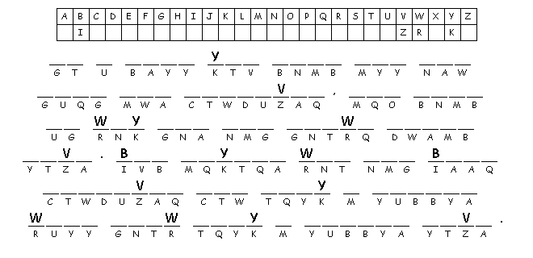

This Week: 1
Kings 21:1-10, (11-14), 15-21a and Psalm
5:1-8 or 2
Samuel 11:26-12:10, 13-15 and Psalm
32,
Galatians
2:15-21, Luke
7:36-8:3
Elementary School Pew-work
Put the sentences in the right order to tell the story:
|
|
At
whose house was Jesus
eating?
_______________________________________________________________________
What
did the woman
buy?
_______________________________________________________________________
What
did the woman do for
Jesus?
______________________________________________________________________

Created by Puzzlemaker at DiscoverySchool.com
Next week: 1 Kings 19:1-4, (5-7), 8-15a and Psalms 42 and 43 or Isaiah 65:1-9 and Psalm 22:19-28 Galatians 3:23-29 Luke 8:26-39